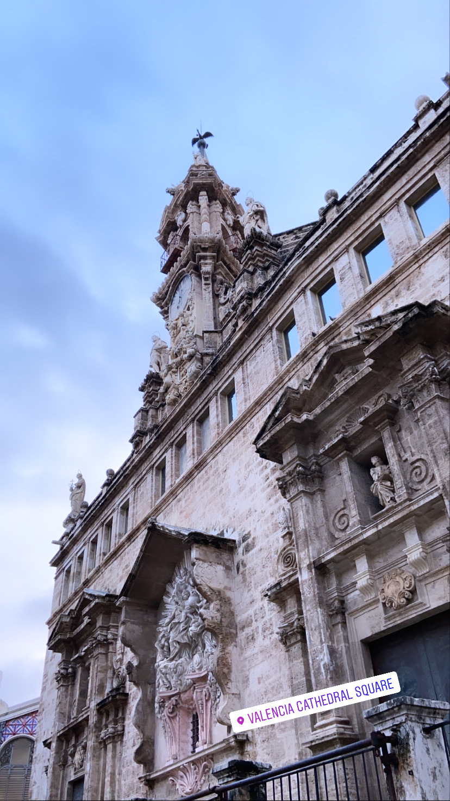
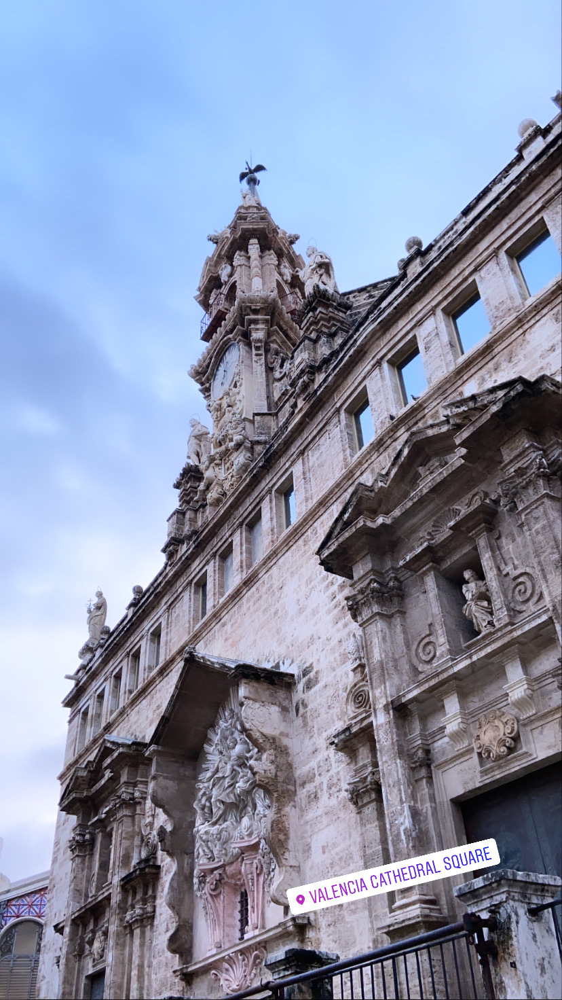

My intellectually curious, team player and resilient nature drives my passion for business and problem solving.
As a rising Senior at Bentley university, rated #10 as the best business schools by Bloomberg, I am pursuing a Bachelor of Science in Corporate Finance
with a Minor in International Relations. For the spring semester of 2020, I had the opportunity to study abroad at the prestigious ESADE university in Barcelona, Spain.
This experience led me to continue my finance education through a global lens and gain more perspective about different cultures.
My professional experience in the financial industry has allowed me to further develop my analytical and interpersonal skills by working at companies in India, U.K,
and Spain. Through my academic and professional experiences, I have been inspired to pursue a career in Portfolio Managment or Consulting.
Humans are most content when they have their lives in control and have the authority to make the decisions they want to make.
When I was in high school, I envisioned and dreamed that I would study abroad in Barcelona for a semester as it is one of the most
exotic places in the world. This past semester my long-awaited dream became a reality.
However, my study abroad experience has not been as I expected it to be. This is because Spain became the epicenter for COVID-19.
I witnessed first-hand the impact of travel restrictions that Barcelona’s tourism faced and how millions of people were affected financially,
mentally, and physically due to the world coming to a standstill. Universities were asking students to leave; countries were not even accepting t
heir own citizens. No one had the power to control this situation, nor did anyone have the power to take any decision they wanted to take. I realized
that this pandemic is something unimaginable, unforeseen by anyone,and puts humans in a situation they do not like.
Adding to the misery of my semester abroad being cut short, my internship in Los Angeles was canceled and now it was time to go home sooner than I ever
imagined. On my flight back home, all I could think about was the kind of impact that the pandemic was going to have on people's lives as no one would
have ever imagined human civilization to come to a standstill. In today’s globalized economy, where every country is dependent on each other, it is wise
to say that it will take some time for things to go back to normal.
After a compilation of these sudden negative events and thoughts, I started suffering with sleepless nights, anxiety and couldn’t help but think that
the world has come to an end for me. I felt extremely anxious about what the future holds for me, what will happen in the future, what will life be like
when this pandemic is over, what will it be like to meet friends again. Such thoughts kept recurring in mind to a point where even if I was overwhelmed.
I felt like I was drowning in a pool full of my own thoughts as these thoughts kept pulling me in and no matter how hard I tried to get out of this pool,
I just got sucked in deeper. This made me realize that in order to get out of this pool of my anxiety driven thoughts, I need to change my perspective; I
need to believe that it is okay not to have absolute control over life.
Life is all about alternatives and making the best out of these alternatives as one never knows where these alternatives take you. I believe that we, as humans,
are facing a huge challenge of changing our lives and staying locked in at our homes. Further, I always believe change happens for the better and had to come to
a realization that I may be looking at all the negative aspects of how COVID-19 has affected me. But when I decided to look at the brighter side, I got to learn
more about myself and was able to foster meaningful relationships with my family and friends who I had become distant from due to the hustle and bustle of my busy
life. Due to which I can say that I am thankful and have gratitude for having this opportunity to spend time with my family and rediscover myself.
At the end, I learnt that if gratitude and the process of learning is a person's gasoline then the sky's the limit for any individual's success. In Catalonia, often
one can hear the Catalans say "Caja o Faja" which was the motto of Spanish army men to succeed in the war. Nowadays people in Catalan use it to emphasize that one needs
to strengthen their mind and win the battle against negativity. So, to conclude, "Caja o Faja!"


 



Email: Bawa_ikau@bentley.edu
I am always looking for mentorship and advice, feel free to reach out to me!